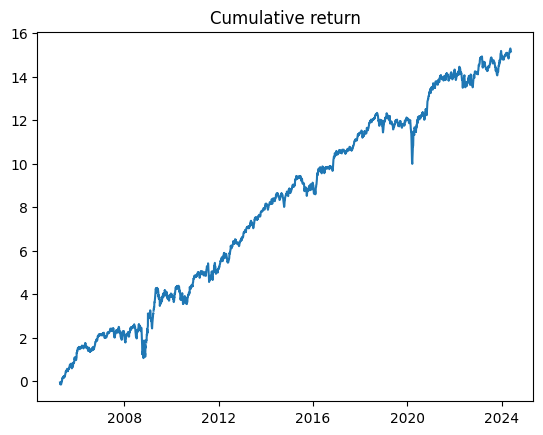

Stock Returns After Extreme Loss Events
May 1, 2025Table of Contents
Research Basis
This analysis is based on the research paper: X. Guo, H. Dong, and G. A. Patterson, "Equity Returns Around Extreme Loss: A Stochastic Event Approach", American Business Review, May 2024, Vol.27(1) 207 – 220.
The core hypothesis is that extreme loss events tend to be followed by recovery. These events are defined as negative returns that fall below the 97.5th percentile of an asset's daily returns distribution. We'll examine this hypothesis using both time series and cross-sectional approaches to evaluate its trading potential.
Data Preparation
First, let's import the necessary libraries and prepare our data:
import os
import numpy as np
import pandas as pd
import matplotlib.pyplot as plt
import statsmodels.api as sm
import yfinance as yf
from multiprocessing import Pool
symbols_dir = "../Symbols.csv"
symbols = pd.read_csv(symbols_dir, index_col=0)
russel = symbols["US-Equity-Russell-2000"].dropna().values.tolist()
snp = symbols["US-Equity-SNP"].dropna().values.tolist()
Code Explanation
This code section sets up the initial data environment:
- Imports essential Python libraries:
- pandas and numpy for data manipulation
- matplotlib for visualization
- statsmodels for statistical analysis
- yfinance for downloading stock data
- Loads stock symbols:
- Reads from a CSV file containing Russell 2000 and S&P 500 symbols
- Creates separate lists for Russell and S&P stocks
- Handles missing values by dropping NaN entries
Data Processing
We process the data to calculate returns and z-scores over different time windows:
def download_data(symbol):
direc = 'data/'
os.makedirs(direc, exist_ok=True)
file_name = os.path.join(direc, symbol + '.csv')
if not os.path.exists(file_name):
ticker = yf.Ticker(symbol)
df = ticker.history(start='2005-01-01', end='2024-5-31')
df.to_csv(file_name)
for i, symbol in enumerate(russel + snp):
print(f'Loading data for {symbol} ({i+1}/{len(russel+snp)})', end='\r')
download_data(symbol)
Code Explanation
This code section implements efficient data downloading:
- Creates a download_data function that:
- Creates a 'data' directory if it doesn't exist
- Implements caching to avoid re-downloading existing data
- Downloads historical data from Yahoo Finance
- Data Management:
- Downloads data for both Russell and S&P stocks
- Shows progress with a dynamic counter
- Saves data in CSV format for future use
def process_data(symbol):
df = pd.read_csv(f'data/{symbol}.csv', index_col=0)
df.index = pd.to_datetime(df.index, utc=True).tz_convert('US/Eastern')
df = df[['Open', 'Close']].copy()
# Calculate returns for different trading scenarios
df['next_5d_return_with_next_day_open'] = df['Close'].shift(-5) / df['Open'].shift(-1) - 1
df['next_5d_return_with_today_close'] = df['Close'].shift(-5) / df['Close'] - 1
df['return'] = df['Close'].pct_change()
df['zscore_22d'] = (df['return'] - df['return'].rolling(22).mean()) / df['return'].rolling(22).std()
df['zscore_66d'] = (df['return'] - df['return'].rolling(66).mean()) / df['return'].rolling(66).std()
return df
Code Explanation
This code section processes the raw data:
- Data Loading and Cleaning:
- Reads CSV files with proper datetime indexing
- Converts timezone to US/Eastern for consistency
- Extracts only necessary price columns
- Return Calculations:
- Computes 5-day forward returns using next day's open price
- Calculates alternative 5-day returns using today's closing price
- Determines daily returns for baseline comparison
- Statistical Measures:
- Calculates 22-day (monthly) z-scores for returns
- Computes 66-day (quarterly) z-scores for longer-term perspective
- Uses rolling windows for dynamic normalization
Statistical Analysis
We perform regression analysis to examine the relationship between extreme losses and subsequent returns:
# Process data in parallel
with Pool(os.cpu_count()-2) as p:
russel_data = p.map(process_data, russel)
snp_data = p.map(process_data, snp)
holder_for_regression = []
for symbol, df in zip(russel, russel_data):
df = df.dropna().copy()
df['ticker'] = symbol
df['index'] = 'russel'
holder_for_regression.append(df)
for symbol, df in zip(snp, snp_data):
df = df.dropna().copy()
df['ticker'] = symbol
df['index'] = 'snp'
holder_for_regression.append(df)
df_for_regression = pd.concat(holder_for_regression, axis=0)
X_col = 'zscore_66d'
df_for_regression = df_for_regression[df_for_regression[X_col] < -2]
df_for_regression = df_for_regression[df_for_regression['next_5d_return_with_next_day_open'] < 2]
X = df_for_regression[X_col]
X = sm.add_constant(X)
y = df_for_regression['next_5d_return_with_next_day_open']
model = sm.OLS(y, X)
results = model.fit()
Code Explanation
This code section prepares and executes the regression analysis:
- Parallel Processing:
- Uses multiprocessing to speed up data processing
- Processes Russell and S&P stocks separately
- Optimizes CPU usage by leaving 2 cores free
- Data Organization:
- Combines processed data into a single DataFrame
- Adds identifier columns for stock index membership
- Handles missing values through removal
- Regression Setup:
- Filters for extreme events (z-score < -2)
- Removes outlier returns (> 200%)
- Prepares independent and dependent variables
- Implements OLS regression with constant term
Let's see the results:
OLS Regression Results
=============================================================================================
Dep. Variable: next_5d_return_with_next_day_open R-squared: 0.002
Model: OLS Adj. R-squared: 0.002
Method: Least Squares F-statistic: 299.6
Date: Wed, 05 Jun 2024 Prob (F-statistic): 4.42e-67
Time: 00:32:44 Log-Likelihood: 1.8890e+05
No. Observations: 195501 AIC: -3.778e+05
Df Residuals: 195499 BIC: -3.778e+05
Df Model: 1
Covariance Type: nonrobust
==============================================================================
coef std err t P>|t| [0.025 0.975]
------------------------------------------------------------------------------
const 0.0128 0.001 18.204 0.000 0.011 0.014
zscore_66d 0.0042 0.000 17.310 0.000 0.004 0.005
==============================================================================
Omnibus: 84444.610 Durbin-Watson: 1.581
Prob(Omnibus): 0.000 Jarque-Bera (JB): 6002992.764
Skew: 1.230 Prob(JB): 0.00
Kurtosis: 30.035 Cond. No. 10.9
==============================================================================
Scatter plot of next 5d return with next day open vs zscore
plt.scatter(df_for_regression[X_col], df_for_regression['next_5d_return_with_next_day_open'])
plt.xlabel(X_col)
plt.ylabel('next_5d_return_with_next_day_open')
plt.title('Scatter plot of next 5d return with next day open vs zscore')
plt.show()

Regression Results Analysis
The regression output reveals several key insights:
- Statistical Significance:
- Both constant and z-score coefficients are highly significant (p < 0.001)
- F-statistic of 299.6 indicates strong overall model significance
- Narrow confidence intervals suggest reliable coefficient estimates
- Effect Magnitude:
- Constant term of 1.28% suggests positive baseline returns
- Z-score coefficient of 0.42% indicates positive relationship with future returns
- Small standard errors indicate precise estimates
- Model Diagnostics:
- Low R-squared (0.002) suggests high return variability
- High Jarque-Bera statistic indicates non-normal residuals
- Durbin-Watson of 1.581 suggests some serial correlation
Analysis of the results
Based on the p-value, we can see that we have a statistically significant factor. But in this table, the "const" is more important. The const is quite huge with a statistically significant p-value. These results support the findings of the paper. Let's see if we can get something out of it.
zscore_holder = []
next_5d_return_holder = []
price_holder = []
for i, df in enumerate(snp_data):
print (f'Processing data for {snp[i]} ({i+1}/{len(snp)})', end='\r')
price_holder.append(df['Close'].shift(1))
zscore_holder.append(df['zscore_66d'])
next_5d_return_holder.append(df['next_5d_return_with_next_day_open'])
for i, df in enumerate(russel_data):
print (f'Processing data for {russel[i]} ({i+1}/{len(russel)})', end='\r')
price_holder.append(df['Close'].shift(1))
zscore_holder.append(df['zscore_66d'])
next_5d_return_holder.append(df['next_5d_return_with_next_day_open'])
price_df = pd.concat(price_holder, axis=1)
zscore_df = pd.concat(zscore_holder, axis=1)
next_5d_return_df = pd.concat(next_5d_return_holder, axis=1)
price_df.columns = russel + snp
zscore_df.columns = russel + snp
next_5d_return_df.columns = russel + snp
# I'm filtering the data to only include the data where the price is greater than 10
# This is to avoid penny stocks and large transactions costs
price_condition = price_df > 10
# I'm filtering the data to only include the data where the next 5d return is less than 2
# This is to avoid outliers
next_5d_return_df_less_than_2 = next_5d_return_df < 2
# I'm filtering the data to only include the data where the zscore is less than -2
# This is the definition of an extreme event based on the paper.
extreme_loss_events = zscore_df < -2
zscore_df = zscore_df[
price_condition &
next_5d_return_df_less_than_2 &
extreme_loss_events
]
# Let's see how the next 5d return is distributed when the zscore is less than -2
next_5d_return_df = next_5d_return_df[zscore_df.notnull()]
# Print the mean of the next 5d return
print (next_5d_return_df.mean(axis=1, skipna=True).mean())
plt.hist(next_5d_return_df.values.flatten(), bins=100)
plt.show()

Portfolio Construction
We construct a portfolio based on the extreme loss signals:
zscore_holder = []
next_5d_return_holder = []
price_holder = []
for i, df in enumerate(snp_data + russel_data):
price_holder.append(df['Close'].shift(1))
zscore_holder.append(df['zscore_66d'])
next_5d_return_holder.append(df['next_5d_return_with_next_day_open'])
price_df = pd.concat(price_holder, axis=1)
zscore_df = pd.concat(zscore_holder, axis=1)
next_5d_return_df = pd.concat(next_5d_return_holder, axis=1)
# Apply filters
price_condition = price_df > 10
next_5d_return_df_less_than_2 = next_5d_return_df < 2
extreme_loss_events = zscore_df < -2
zscore_df = zscore_df[
price_condition &
next_5d_return_df_less_than_2 &
extreme_loss_events
]
next_5d_return_df = next_5d_return_df[zscore_df.notnull()]
portfolio_return = next_5d_return_df.mean(axis=1, skipna=True)
# Calculate Sharpe ratio
sharpe_ratio = portfolio_return.mean() / portfolio_return.std() * np.sqrt(252)

Portfolio Construction Methodology
This code section implements the portfolio strategy:
- Data Organization:
- Creates separate holders for prices, z-scores, and future returns
- Combines data from both S&P and Russell indices
- Aligns all time series for consistent analysis
- Filter Implementation:
- Price filter: Excludes stocks below $10
- Return filter: Removes extreme future returns (>200%)
- Signal filter: Selects stocks with z-scores below -2
- Portfolio Metrics:
- Calculates equal-weighted portfolio returns
- Computes annualized Sharpe ratio
- Handles missing values appropriately
Results and Analysis
The analysis reveals several key findings:
- The strategy shows a statistically significant relationship between extreme losses and subsequent returns
- The constant term in our regression is notably large and statistically significant, supporting the paper's findings
- The strategy demonstrates a high Sharpe ratio before transaction costs
Important Considerations
There are several important caveats to consider:
- Transaction Costs:
- The analysis doesn't include trading costs
- High turnover may significantly impact actual returns
- Implementation costs could reduce strategy profitability
- Market Impact:
- Large positions may affect market prices
- Liquidity constraints during stress periods
- Potential execution challenges in volatile markets
- Risk Considerations:
- Strategy exposed to market tail risk
- Potential for extended drawdown periods
- Need for robust risk management framework